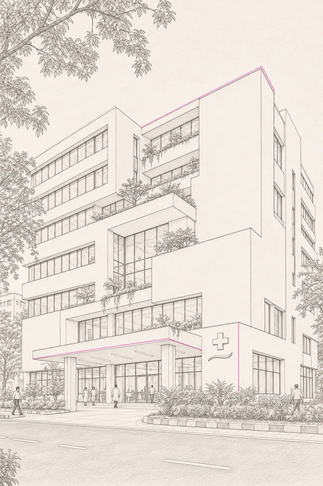
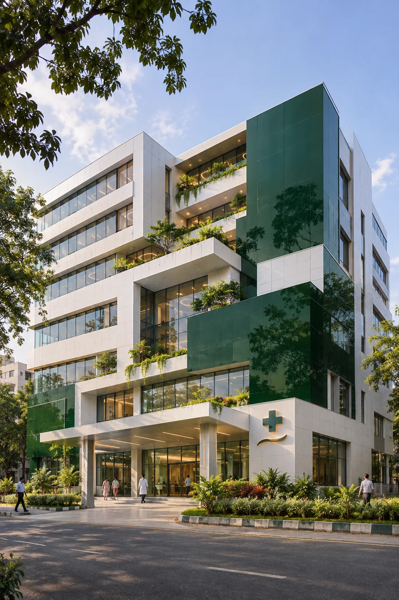
01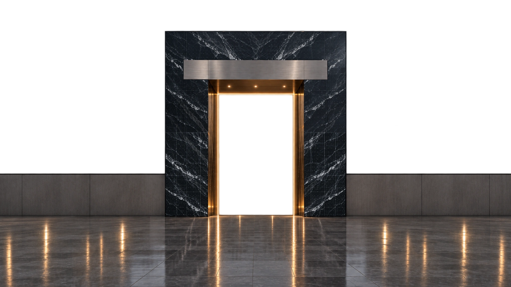
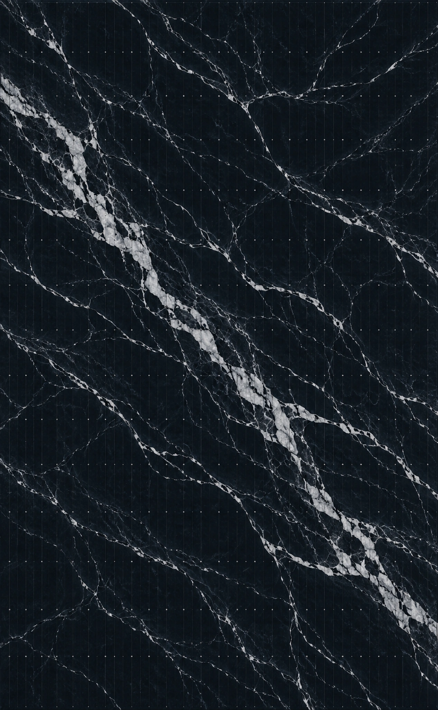
Explore BIPV by industry sector.
Move across a sketch. Reveal its solar future.
Swipe through buildings. Drag the arrow to transform.


01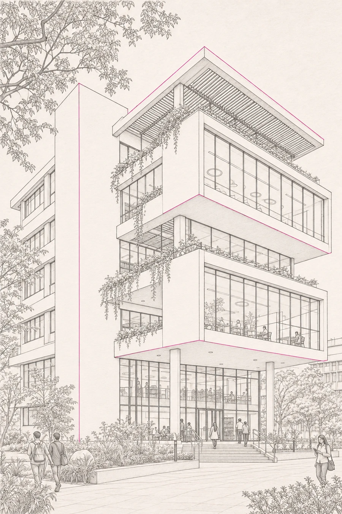
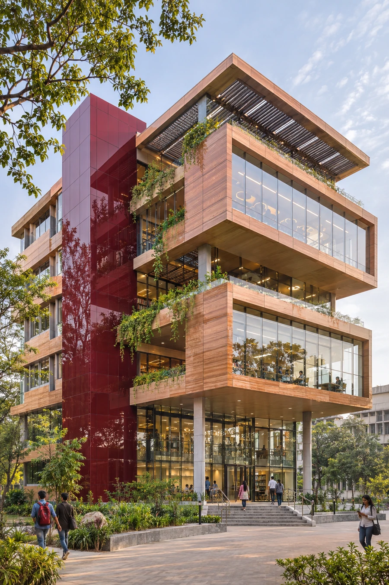
02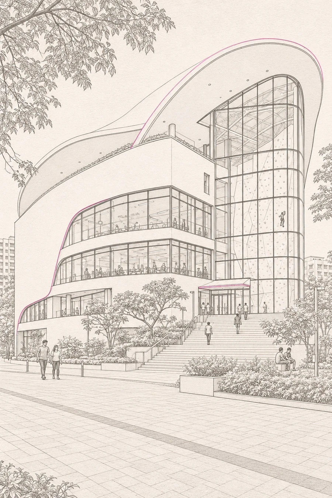
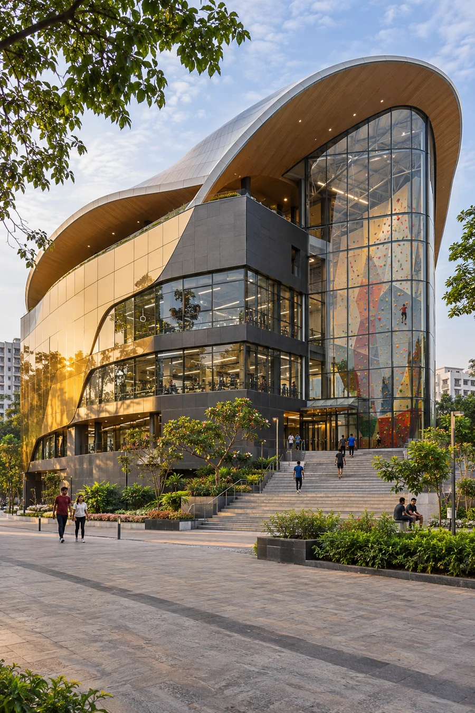
03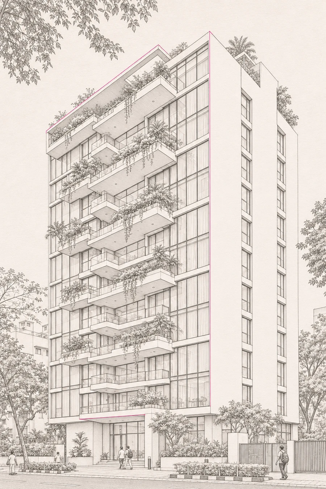
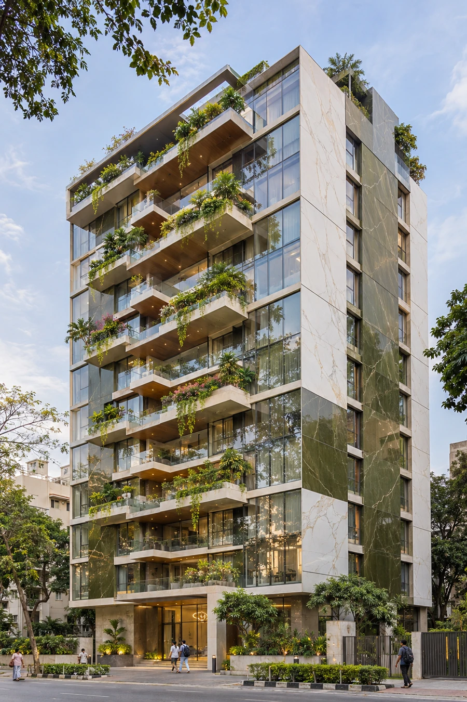
04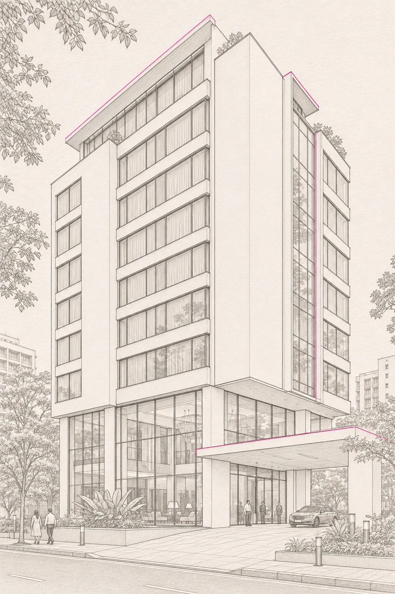
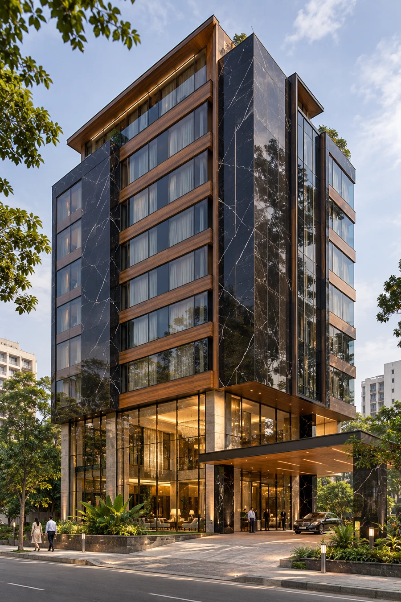
05Architectural concepts inspired by the Solrclad Coloured, Marble and Wooden Series.
From architecture to an energy-generating façade.
Explore the complete journey, right here.